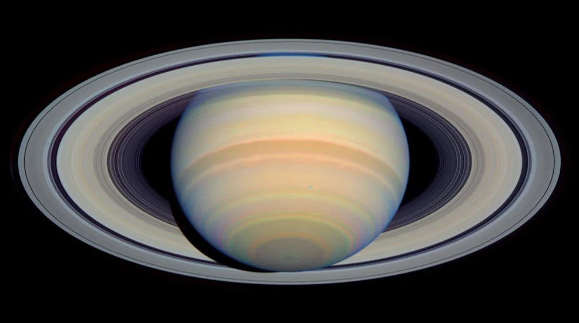
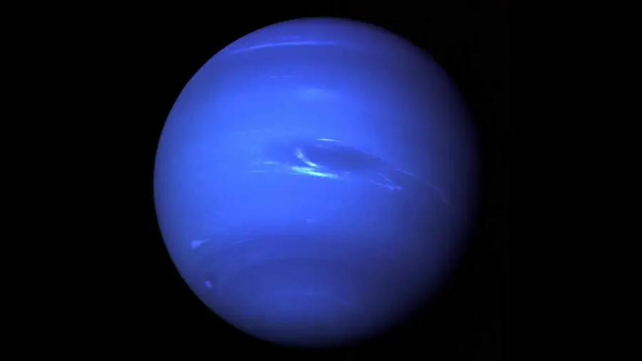

| Jupiter | Saturn | Neptune | Venus | |
|---|---|---|---|---|
| Images of Jupiter, Saturn, Neptune, Venus | |
 |
 |
|
| Fact #1 | From an average distance of 484 million miles (778 million kilometers), Jupiter is 5.2 astronomical units away from the Sun. | From an average distance of 886 million miles (1.4 billion kilometers), Saturn is 9.5 astronomical units away from the Sun. | From an average distance of 2.8 billion miles (4.5 billion kilometers), Neptune is 30 astronomical units away from the Sun. | Venus orbits the Sun from an average distance of 67 million miles (108 million kilometers), or 0.72 astronomical units. |
| Fact #2 | Jupiter has a radius of 43,440.7 miles (69,911 kilometers) | Saturn has a equatorial diameter of about 74,897 miles (120,500 kilometers) | Neptune has a equatorial diameter of 30,775 miles (49,528 kilometers) | Venus' diameter at its equator is about 7,521 miles (12,104 kilometers) |
| Fact #3 | Jupiter's magenetic field spans about 600,000 to 2 million miles (1 to 3 million kilometers) toward the Sun | Saturn's magnetic field is smaller than Jupiter's but 578 times more powerful | Neptune's magnetic field is 27 times more powerful than Earth's however it variates during each rotation that Neptune takes. | Venus does not have its own magnetic field. It has a induced magnetic field which is very weak. |